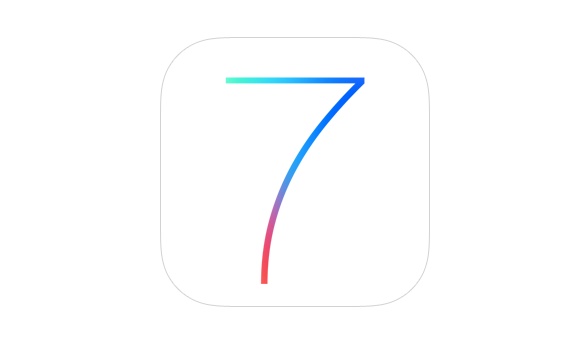

От скевоморфизма к плоскому дизайну

Когда дизайн впервые встретился с экраном, у него не было ни языка, ни конвенций. Эти двадцать лет – история о том, как профессия училась говорить с пользователем через цифровую плёнку, и как она прошла через свой подростковый период перегруженности и обмана, чтобы прийти к зрелости.
Скевоморфизм как когнитивная помощь
Когда компьютеры и интернет стали достоянием массового пользователя в 1995–2000 годах, дизайнеры столкнулись с радикальной проблемой: интерфейс был абсолютно незнаком большинству людей. Как помочь пользователю понять логику, которая не имела прецедента в физическом мире? Решение было логичным и, в ретроспективе, консервативным: скевоморфизм (skeuomorphism) – визуальное подражание физическим объектам.
Папка выглядит как папка. Корзина выглядит как корзина. Это была когнитивная помощь: использование знакомого для обучения незнакомому.


Деградация и UX
Однако к началу 2000-х скевоморфизм деградировал. Каждый дизайнер добавлял текстуры, тени, градиенты, блики, имитируя материалы, которые в цифре были бессмысленны. Интерфейсы становились перегруженными, медленными, путанными. Это был период опустошения.
Параллельно возникали системные голоса, которые начинали артикулировать методологию. Дональд Норман (Donald Norman), бывший руководитель дизайна Apple, ввёл термин «пользовательский опыт» (User Experience, UX) в 1993 году, переопределяя дизайн как множество взаимодействий, а не набор скринов.
Битва за плоскость
К концу 2000-х годов в дизайн-культуре произошла явная политизация: возник спор о том, что такое честный дизайн в цифре. С одной стороны, сторонники скевоморфизма, включая Apple при Стиве Джобсе, утверждали, что реалистичные интерфейсы более интуитивны. Кнопка должна выглядеть как кнопка, которую можно нажать. Иначе пользователь не поймёт.
С другой стороны, растущее движение плоского дизайна (flat design) утверждало, что реализм – это иллюзия и обман. Цифра не должна претворяться быть физикой. Она должна быть честной насчёт своей природы: это плоскость, это сигналы, это информация.
Цифра не должна претворяться быть физикой. Она должна быть честной насчёт своей природы.
iOS 7 и возвращение к Рамсу
iOS 7 (2013) под руководством Джонатана Айва стал поворотной точкой. Айв отказался от скевоморфизма в пользу подхода, предложенного его коллегой Крэйгом Федериги (Craig Federighi), разработав плоский дизайн с глубиной (flat design with depth) – плоскую эстетику, но с иерархией, движением и прозрачностью.
Айв сказал: «Я думаю, что есть глубокая и долгая красота в простоте, в ясности, в эффективности». Это было возвращением к Рамсу: честность материала (цифра – это не физика), ясность функции (каждый элемент служит задаче), минимализм (только необходимое).


Когда сегодня кто-то из героев deFindings обсуждает «честность интерфейса», AI-генеративные картинки или границы между крафтом и автоматизацией – это та же дискуссия. Просто другая технологическая эпоха.
Я думаю, что есть глубокая и долгая красота в простоте, в ясности, в эффективности.
– Джонатан Айв